Highlight Achievements
Featured in The Design Museum
[London, May 2021]
The robotic arm which I designed is being featured in London's Design Museum, with a whole exhibition centered around the drawing arm and Ai-Da's artistic capabilities.
The robotic arm which I designed is being featured in London's Design Museum, with a whole exhibition centered around the drawing arm and Ai-Da's artistic capabilities.

Reviewer for AIM2021 Conference
[Delft, March 2021]
I was invited by the organisers of the 2021 IEEE Advanced Intelligent Mechatronics conference (to be held at Delf) to be an official reviewer. The request was to assess a paper submission that lied within my area of research.
Evaluating the quality of a research paper was a big responsibility, as it meant having a significant say in whether or not it gets accepted to be presented in the global conference as well as officially published.
I was invited by the organisers of the 2021 IEEE Advanced Intelligent Mechatronics conference (to be held at Delf) to be an official reviewer. The request was to assess a paper submission that lied within my area of research.
Evaluating the quality of a research paper was a big responsibility, as it meant having a significant say in whether or not it gets accepted to be presented in the global conference as well as officially published.
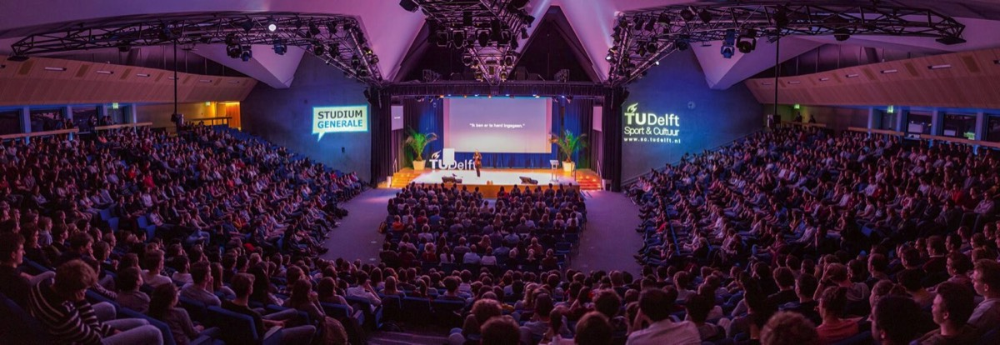
Presenter at BCUR2021
[Leeds, April 2021]
I was invited to present my research at the British Conference of Undergraduate Research (BCUR) as well as to chair several sessions there.
BCUR is an annual conference to honor the UK’s top undergraduate researchers, giving them an opportunity to disseminate their studies and share their exciting findings. Around 500 attendees from across 70 institutions were involved. The research I presented is on a machine learning-based neuromuscular interface I developed for stroke survivors. It demonstrated, for the first time, the feasibility of using 3D printed electrodes to build a gesture-recognition interface for the upper limb.
You can find my published paper on the IEEE website here.
I was invited to present my research at the British Conference of Undergraduate Research (BCUR) as well as to chair several sessions there.
BCUR is an annual conference to honor the UK’s top undergraduate researchers, giving them an opportunity to disseminate their studies and share their exciting findings. Around 500 attendees from across 70 institutions were involved. The research I presented is on a machine learning-based neuromuscular interface I developed for stroke survivors. It demonstrated, for the first time, the feasibility of using 3D printed electrodes to build a gesture-recognition interface for the upper limb.
You can find my published paper on the IEEE website here.
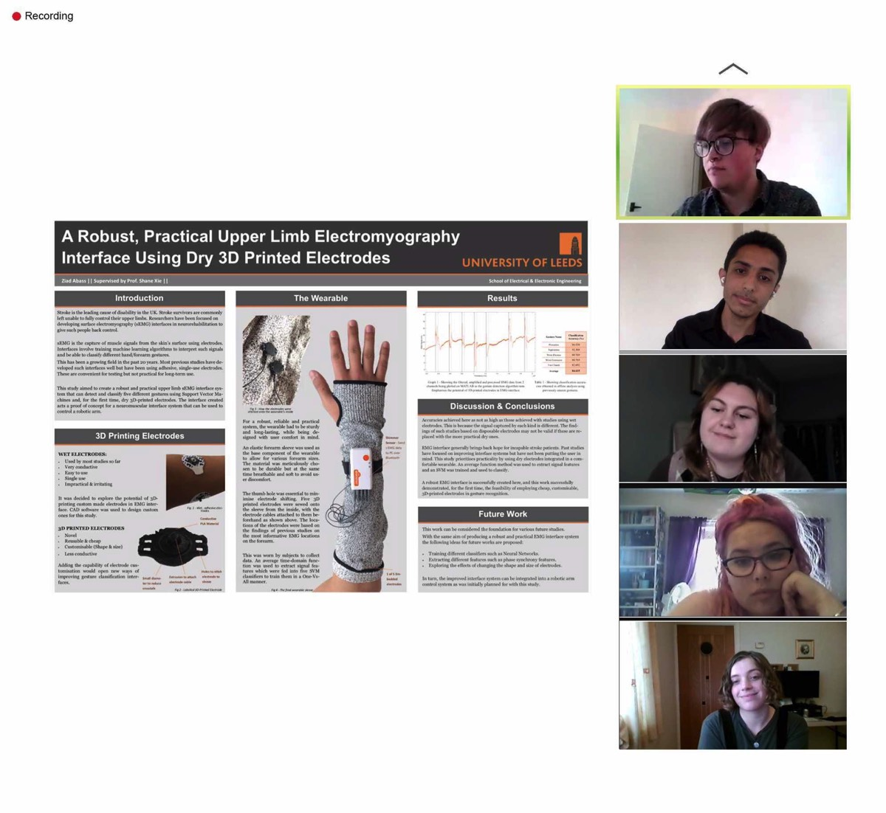
Interviewed by CairoScene
[Cairo, February 2021]
The press are still very excited about Ai-Da even more than a year after she was first released to the world. Her work fascinated the media in Egypt and we were invited by MO4 Network's cairoscene / startupscene organisations to be interviewed.
I talked about the message Ai-Da is sending through her art and what the future may hold for artificial intelligence in general, and for the intersection of AI with art.
The press are still very excited about Ai-Da even more than a year after she was first released to the world. Her work fascinated the media in Egypt and we were invited by MO4 Network's cairoscene / startupscene organisations to be interviewed.
I talked about the message Ai-Da is sending through her art and what the future may hold for artificial intelligence in general, and for the intersection of AI with art.
Gave a Lecture for Art D'Egypte
[Cairo, 2021]
Art D'Egypte is a prominent organisation that aims to promote Egyptian art while highlighting and preserving Egypt's heritage sites. They were very excited when they heard that an Egyptian was part of creating the world's first AI robot artist - Ai-Da, and they invited my partner Salah and I to give a lecture on our involvement with the project.
We told our story of how we went about developing algorithms to turn a robot into a creative artist and talked about the very important message Ai-Da is trying to send through her artwork. We also discussed the ethical responsibility that comes with working on projects with such a massive sphere of influence. The talk was very well received by the engaged audience and is available to watch here.
Art D'Egypte is a prominent organisation that aims to promote Egyptian art while highlighting and preserving Egypt's heritage sites. They were very excited when they heard that an Egyptian was part of creating the world's first AI robot artist - Ai-Da, and they invited my partner Salah and I to give a lecture on our involvement with the project.
We told our story of how we went about developing algorithms to turn a robot into a creative artist and talked about the very important message Ai-Da is trying to send through her artwork. We also discussed the ethical responsibility that comes with working on projects with such a massive sphere of influence. The talk was very well received by the engaged audience and is available to watch here.
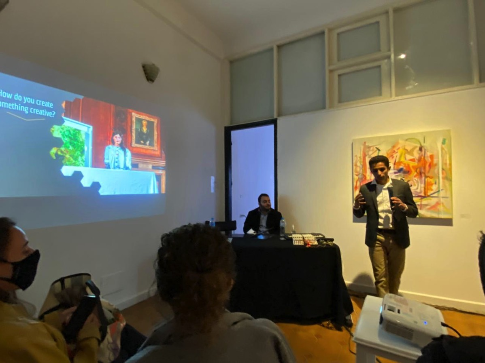
IEEE/ASME Advanced Intelligent Mechatronics Conference
[Hong Kong, 2019]
I was invited to the international 2019 IEEE/ASME AIM conference in Hong Kong to present the research paper based on my individual bachelors project studies.
My paper was based on developing a novel gesture-recognising system for neuromuscular interface using 3D-printed electrodes for the first time. More information about this research can be found here.
Being the only undergraduate presenting a paper in a global conference was an exhilarating experience. I was honored to meet scholars from all around the world and exchange ideas while learning about the world's cutting edge research.
It was truly incredible to be part of the discussions on emerging technologies in the field of my passion, all of which will be play pivotal roles in shaping the future of mechatronics and robotics.
The paper is now published and can be found here.
I was invited to the international 2019 IEEE/ASME AIM conference in Hong Kong to present the research paper based on my individual bachelors project studies.
My paper was based on developing a novel gesture-recognising system for neuromuscular interface using 3D-printed electrodes for the first time. More information about this research can be found here.
Being the only undergraduate presenting a paper in a global conference was an exhilarating experience. I was honored to meet scholars from all around the world and exchange ideas while learning about the world's cutting edge research.
It was truly incredible to be part of the discussions on emerging technologies in the field of my passion, all of which will be play pivotal roles in shaping the future of mechatronics and robotics.
The paper is now published and can be found here.
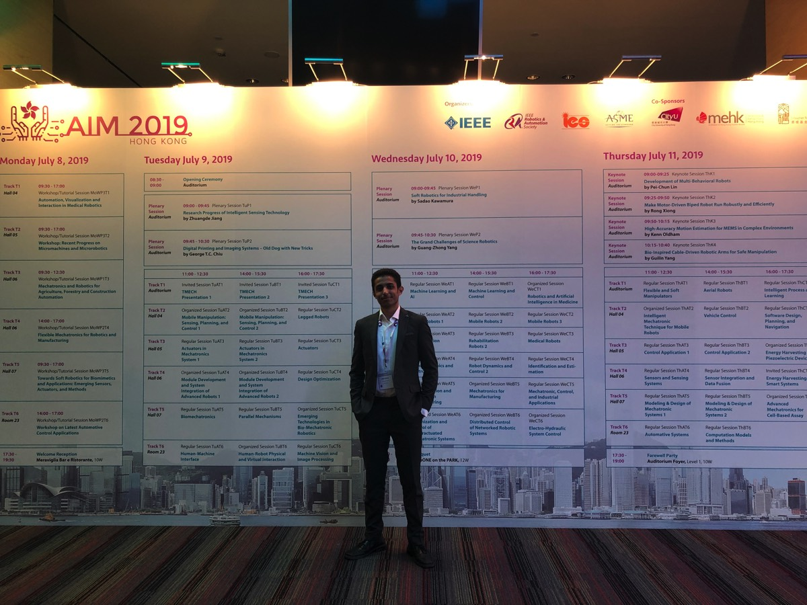
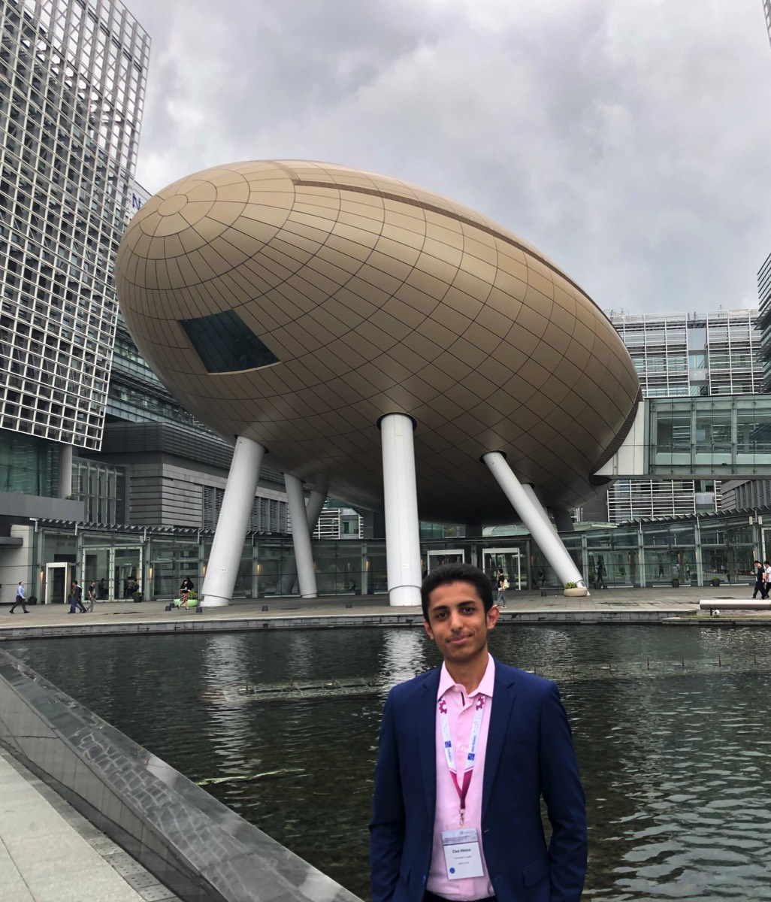
Google BGN Hackathon Win
[London, 2019]
My team won first place in the Google BGN Hackathon.
It was nothing short of an incredible experience to be part of this event. As a team of 6, we created a mobile app which awards points for users throwing away litter they come across on the street. These points could then be redeemed for vouchers offered by small local businesses. That way, the streets get cleaner while growing businesses get promoted.
This was my first big hackathon and I am amazed at where it has taken me, both from a technical perspective as well as from a personal growth one. I believe that adopting a positive mindset that can innovate creative solutions is the key to develop impactful technologies, and working alongside five others with this mindset was the core of the team’s success.
Our app can be found here.
My team won first place in the Google BGN Hackathon.
It was nothing short of an incredible experience to be part of this event. As a team of 6, we created a mobile app which awards points for users throwing away litter they come across on the street. These points could then be redeemed for vouchers offered by small local businesses. That way, the streets get cleaner while growing businesses get promoted.
This was my first big hackathon and I am amazed at where it has taken me, both from a technical perspective as well as from a personal growth one. I believe that adopting a positive mindset that can innovate creative solutions is the key to develop impactful technologies, and working alongside five others with this mindset was the core of the team’s success.
Our app can be found here.
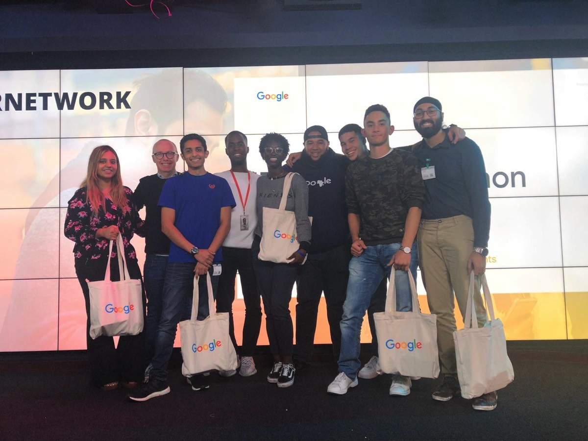
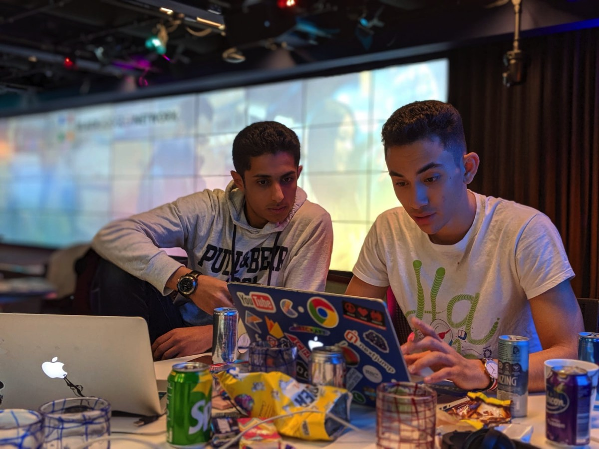
University Of Leeds Dean's List
[Leeds, 2017]
The Faculty of Engineering’s Dean’s List is a prestigious award which is only awarded to the top 5% of students from the 1st and 2nd years. I was honored to be one of the top performers during the 2016/17 academic year.
The Faculty of Engineering’s Dean’s List is a prestigious award which is only awarded to the top 5% of students from the 1st and 2nd years. I was honored to be one of the top performers during the 2016/17 academic year.
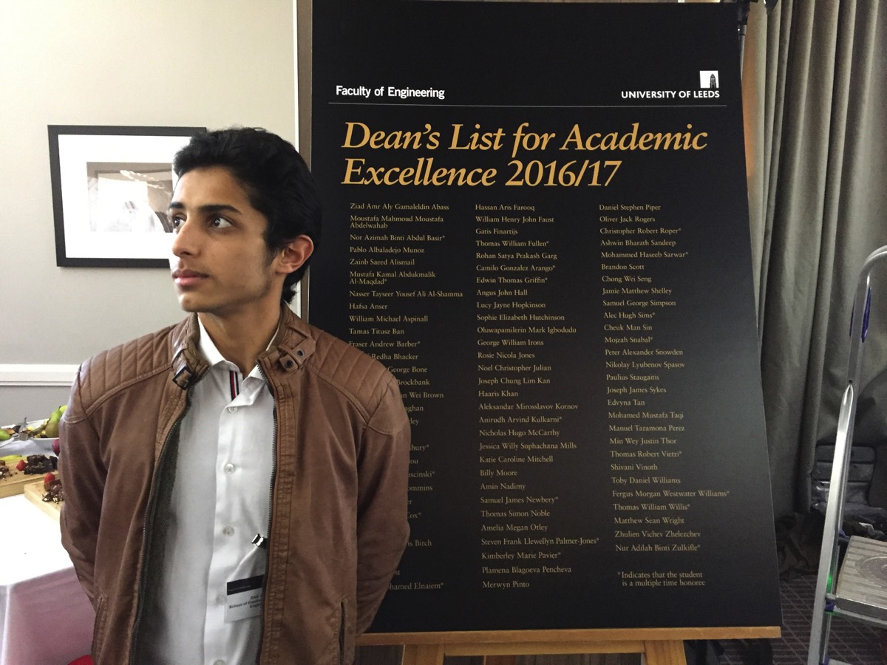
Cambridge Excellence Award
[2016]
I was awarded by Cambridge International Examinations for being the top scorer in Kuwait for the Physics A-Level exam.
I was awarded by Cambridge International Examinations for being the top scorer in Kuwait for the Physics A-Level exam.
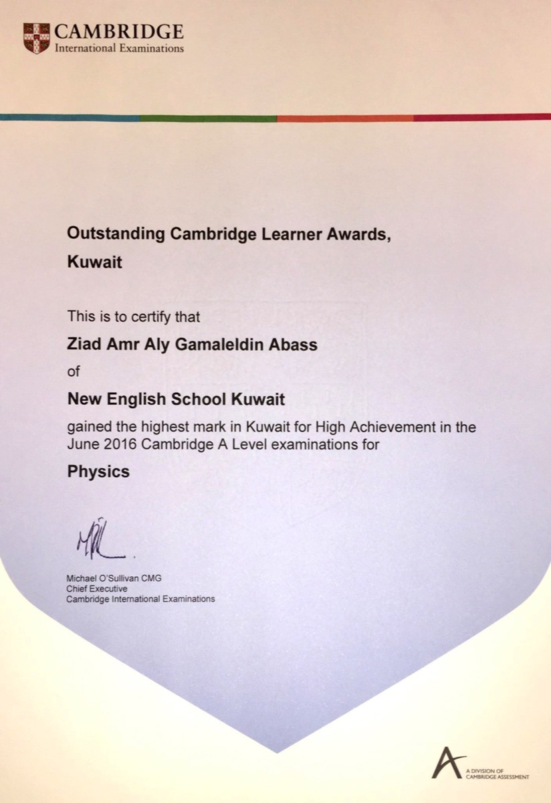
Duke Of Edinburgh Silver Award
[Cyprus, 2015]
The Duke Of Edinburgh is a youth awards programme which recognises the completion of a series of self-improvement exercises modelled on Kurt Hahn's solution to the "Six Declines of Modern Youth".
The Silver award entails planning, training for, and completion of an adventurous journey abroad, in addition to spending 6 months learning a new skill, providing a volunteering service, and taking on or improving in a sport.
Here are the specifics of what I did:
Service: I volunteered to work as an assistant for primary teachers, helping with day-to-day tasks and activities.
Skill: I joined the Model United Nations society and became competent in the art of debate and arguments. I went on to take part in national conferences.
Physical: I had previously started playing squash so I used this time to perfect myself in it.
Expedition: As a team of 7, we went on a 3-day hike in the Cypriot mountains. We had to plan all our routes ourselves beforehand and be completely self-reliant when out in the wild.
More info about the Duke Of Edinburgh's Award can be found here.
The Duke Of Edinburgh is a youth awards programme which recognises the completion of a series of self-improvement exercises modelled on Kurt Hahn's solution to the "Six Declines of Modern Youth".
The Silver award entails planning, training for, and completion of an adventurous journey abroad, in addition to spending 6 months learning a new skill, providing a volunteering service, and taking on or improving in a sport.
Here are the specifics of what I did:
Service: I volunteered to work as an assistant for primary teachers, helping with day-to-day tasks and activities.
Skill: I joined the Model United Nations society and became competent in the art of debate and arguments. I went on to take part in national conferences.
Physical: I had previously started playing squash so I used this time to perfect myself in it.
Expedition: As a team of 7, we went on a 3-day hike in the Cypriot mountains. We had to plan all our routes ourselves beforehand and be completely self-reliant when out in the wild.
More info about the Duke Of Edinburgh's Award can be found here.
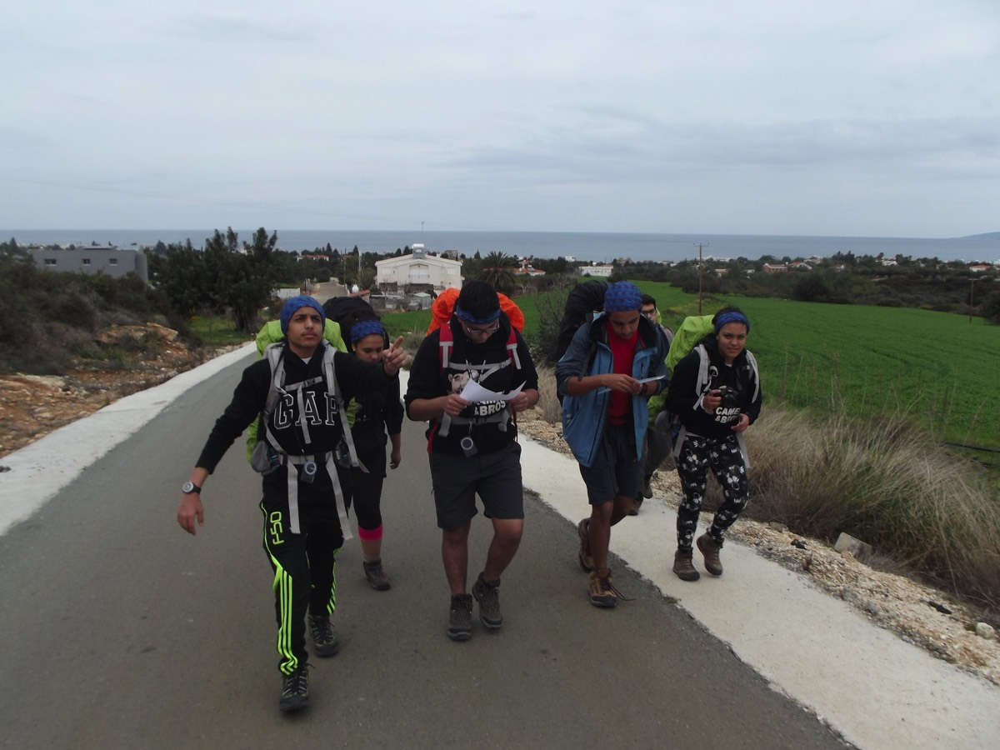
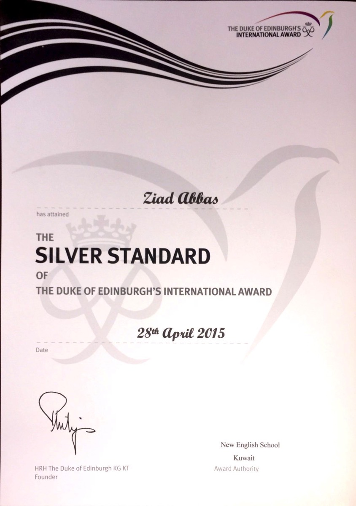
University of Waterloo Mathematics Contest
[2014]
I scored within the top 5% in The University of Waterloo's international 'Cayley' mathematics contest.
The contest's questions are designed to test ingenuity and insight. Rather than testing curriculum content, most of the problems test logical thinking and mathematical problem solving.
On the right are the honorary mentions for the 2014 Cayley contest. The full list can be found here.
More info about these contests can be found here.
I scored within the top 5% in The University of Waterloo's international 'Cayley' mathematics contest.
The contest's questions are designed to test ingenuity and insight. Rather than testing curriculum content, most of the problems test logical thinking and mathematical problem solving.
On the right are the honorary mentions for the 2014 Cayley contest. The full list can be found here.
More info about these contests can be found here.
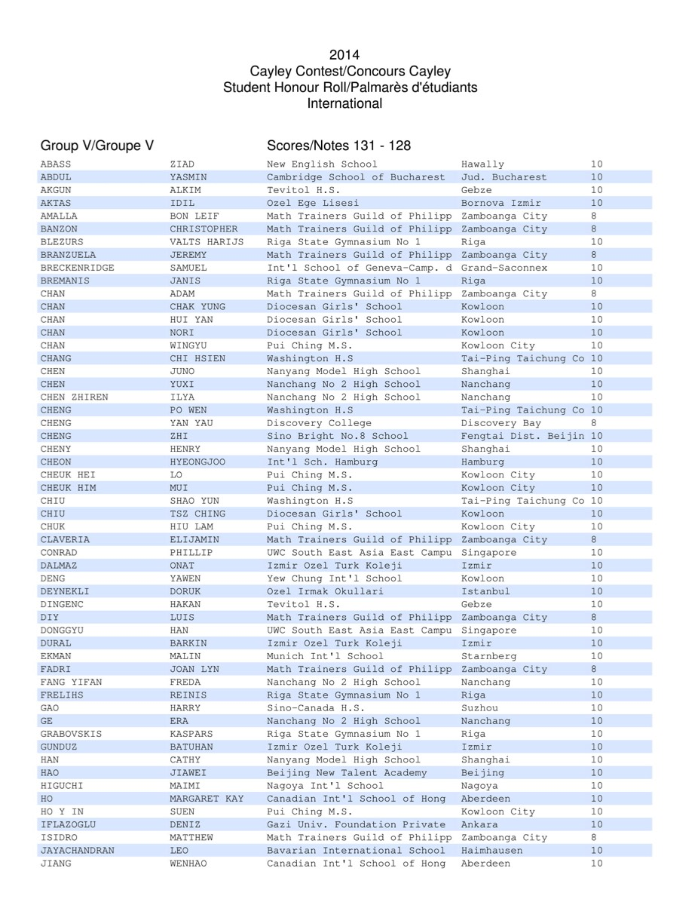
Duke Of Edinburgh Bronze Award
[2014]
Run by the same organisation as the Silver Award mentioned above, the Bronze award entails the same aspects as the Silver but with only 3 months being spent doing a service, learning a new skill and taking on a physical sport, and an expedition that lasts 2 days rather than 3.
Run by the same organisation as the Silver Award mentioned above, the Bronze award entails the same aspects as the Silver but with only 3 months being spent doing a service, learning a new skill and taking on a physical sport, and an expedition that lasts 2 days rather than 3.
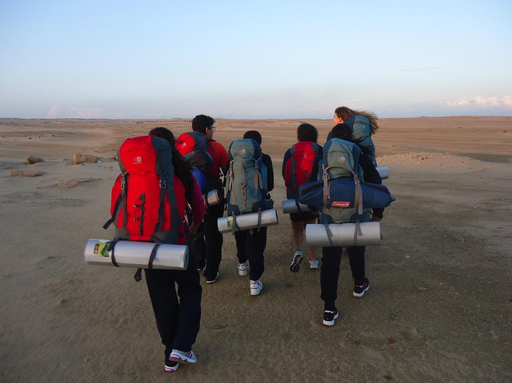
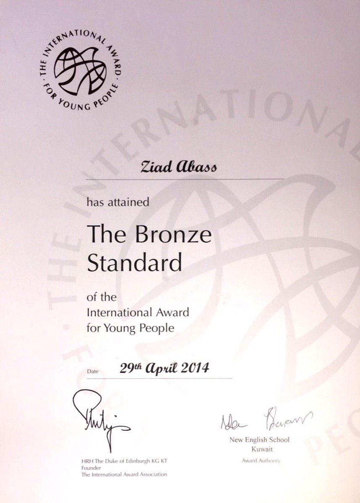
The Kuwait Science Fair Win
[Kuwait, 2012]
Co-organized by ExxonMobil, Kuwait Energy Company, Kuwait Motor Sports Club, and the Scientific Center of Kuwait, who were all united by a shared commitment to generate student interest, excitement and innovation in math and science in a competitive setting.
Contestants were first given time to come up with a new idea and apply, then the best 100 of those ideas were hand-picked by the panel. These 100 contestants/groups were then given 5 months to work on their projects, with their progress being monitored and their work assessed along the way.
In addition to winning the 'Best Biological Project' award, I won the overall first place award across all participants.
My project was titled "Using Starchy Soil As A Natural Fertilizer". The full details of my journey through the Science Fair can be found in the news article shown on the right.
The article can also be found on page 7 here.
Co-organized by ExxonMobil, Kuwait Energy Company, Kuwait Motor Sports Club, and the Scientific Center of Kuwait, who were all united by a shared commitment to generate student interest, excitement and innovation in math and science in a competitive setting.
Contestants were first given time to come up with a new idea and apply, then the best 100 of those ideas were hand-picked by the panel. These 100 contestants/groups were then given 5 months to work on their projects, with their progress being monitored and their work assessed along the way.
In addition to winning the 'Best Biological Project' award, I won the overall first place award across all participants.
My project was titled "Using Starchy Soil As A Natural Fertilizer". The full details of my journey through the Science Fair can be found in the news article shown on the right.
The article can also be found on page 7 here.
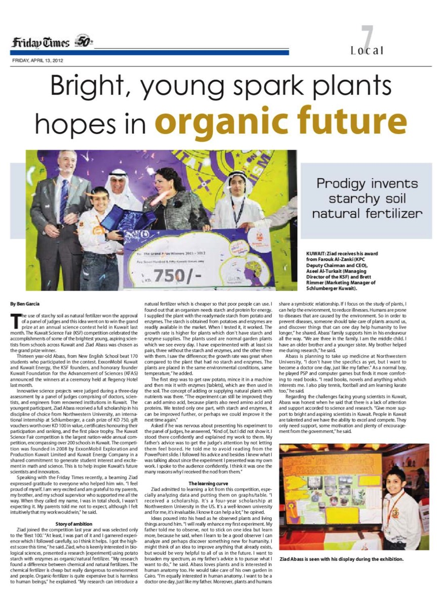
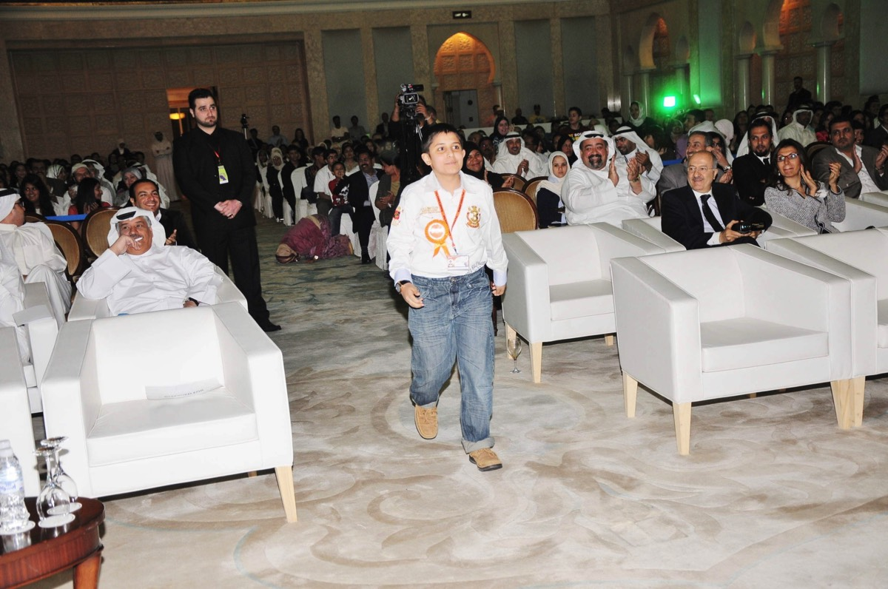